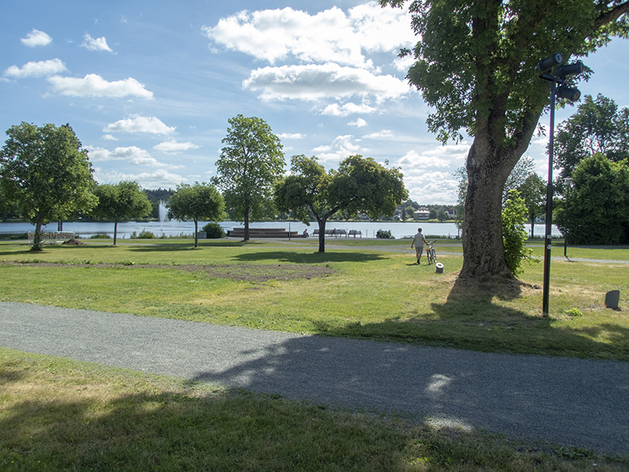

Turistmål
Stadsparken
Stadsparken ställdes i ordning till park i slutet av 1890-talet på initiativ av Carl Peterson. Stadsparkens besökare erbjuds i dag ett vackert promenadstråk runt sjön, en tillgänglighetsanpassad lekplats, bangolf, grillplats, bollplan, underhållning från scen såsom ”pop i sommarnatt” och mycket mer. Här finns stora gräsytor men även en sortimentsträdgård, blomsterplanteringar, dammar och skulpturer. Offentlig toalett finns i biblioteket i näraliggande Kulturhuset liksom vid lekplatsen sommartid.
På 50- och 60-talen var stadsparken fylld av djur. Tvättbjörnar, påfåglar och apor. Och i sjön simmade pingvinerna. Numera är apburen utbytt mot en bangolfbana och istället för att mata påfåglarna får du äta glassen du köpt i glasskiosken på egen hand.
Stadsparken innesluter Ingsbergssjön i Nässjös centrala delar. Här kan du strosa omkring, ta en titt i sortimentsträdgården eller bara vila ut i gräset under Carl Peterson-statyn. Besöker du parken en torsdagskväll under sommaren är chansen god att du dessutom får njuta av rockmusik framförd av lokala förmågor i det årligen återkommande "Pop i Sommarnatt".
Lekparken ”Molekylen” byggdes om och gjordes tillgänglig för flera under 2010 (bilden ovan). Besökarna är många från såväl Nässjö som näraliggande orter och kommuner. Carl Petersons plats intill Kulturhuset Pigalle är en populär mötesplats under sommaren. Andra åtgärder som genomförts de senaste åren är belysning av minnessten, iordningsställande av en skulpturgrupp och nya välkomstskyltar som visar vad parken har att erbjuda. Promenadstråket har också fått ny dränering för att det inte ska vara några problem att gå torrskodd runt sjön.
Sommaren 2014 fick Stadsparken två nya populära mötesplatser. En ny kioskbyggnad med enklare servering finns numera invid lekparken. Här bedriver konditori Princess försäljning av nybakat och glass. Även den efterlängtade Bryggan, möblerad bland annat med sköna soffor, kunde invigas 2014. Här kan man slå sig ner och njuta av fågellivet, närheten till vattnet och såväl dag- som kvällssolen.
Källa: Nässjö kommun
Torsa stenar

Ett besök vid Torsa stenar tar dig 1500 år tillbaka i tiden. Gravplatsen härstammar från romersk järnålder och är en av länets mest fascinerande fornlämningar. Här finns flera stora stenformationer som bara har sin motsvarighet på några få platser i Sverige. Många spännande fynd har gjorts här, och platsen är sägenomspunnen. Vid Drakaröret, som är en av Sveriges största treuddar, sägs en drake vakta en skatt och man bör inte vistas där nattetid...
I gläntan i den glesa tallskogen finns tolv gravar. Förutom treudden, som är 1 meter hög och 17 meter lång med insvängda sidor, finns två runda stensättningar, en kvadratisk stensättning, tre domarringar, tre stenkretsar och två bautastenar.
Källa: Nässjö kommun